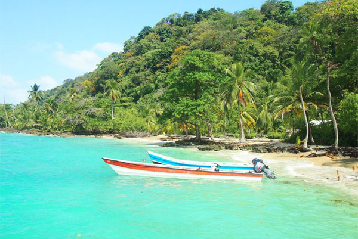

Ofrecemos un transporte marítimo en lancha hacia la ruta Necoclí - Capurganá con un servicio de lanchas muy completa, excelente atención,
derecho a maletín y alimentación, la ruta permite disfrutar del viaje y del mar caribe.

Cartagena - San Andrés:
Ofrecemos un transporte marítimo en lancha hacia la ruta Cartagena - San Andrés con un servicio de lanchas muy completa, excelente atención,
derecho a maletín y alimentación, la ruta permite disfrutar del viaje y del mar caribe.
Cartagena - Barú:
Ofrecemos un transporte marítimo en lancha hacia la ruta Cartagena - Barú con un servicio de lanchas muy completa, excelente atención,
derecho a maletín y alimentación, la ruta permite disfrutar del viaje y del mar caribe.